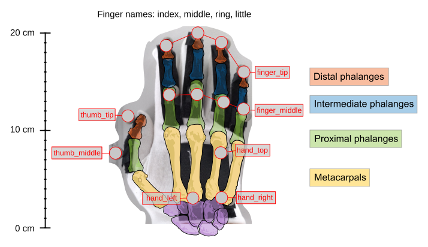
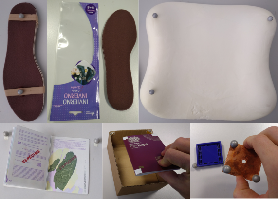

Motion Capture Setup¶
Glove¶
We used the following labelled marker on the glove to record the datasets used in the paper:
Hand pose:
hand_top,hand_left,hand_rightPer finger (thumb, index, middle, ring, little):
[finger]_middle,[finger]_tip
The following shows the configuration of our glove for the right hand:

The figure is based on this work of Mariana Ruiz Villarreal (LadyofHats); retouches by Nyks.
{kind=link}
Tracked Objects¶
In addition, we attached motion capture markers to objects to track their poses and to transfer object manipulation trajectories into an object-relative coordinate system. The following image shows these objects.

The marker configuration and the definition of frames based on markers is implemented and documented in hand_embodiment/mocap_objects. We assume that the z-axis points up for all objects with only two markers. Meshes for visualization are available here and transformations between marker frames and the mesh frames can be found in hand_embodiment/vis_utils.